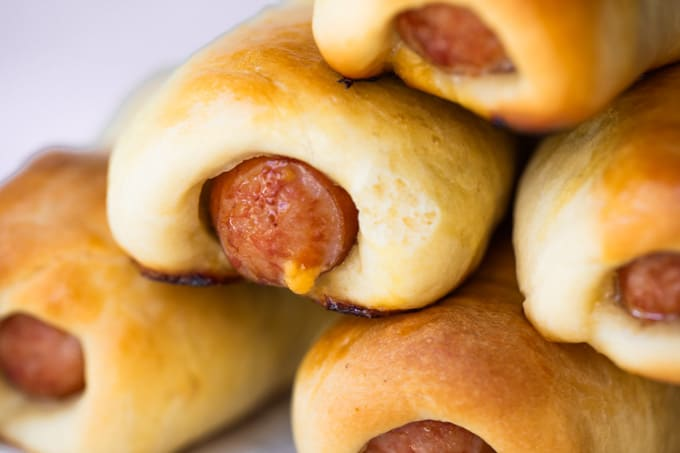

Kolaches Recipe

Descripton
Kolaches are the best! I literally love these fucking things.
Ingredients
- Sausage
- Dough
- Cheese
Steps
- Working one at a time, using your fingers press out a piece of dough into a rectangular shape that is the same width as the sausages. Place the sausage on top and roll, then pinch where the dough meets. Place this seam side down onto a large baking sheet. Place kolaches about 1 inch apart from each other. Continue until all dough and sausages have been rolled.
- Preheat oven to 400℉.
- Bake for 15-17 minutes until the tops of the kolaches are a golden brown color.